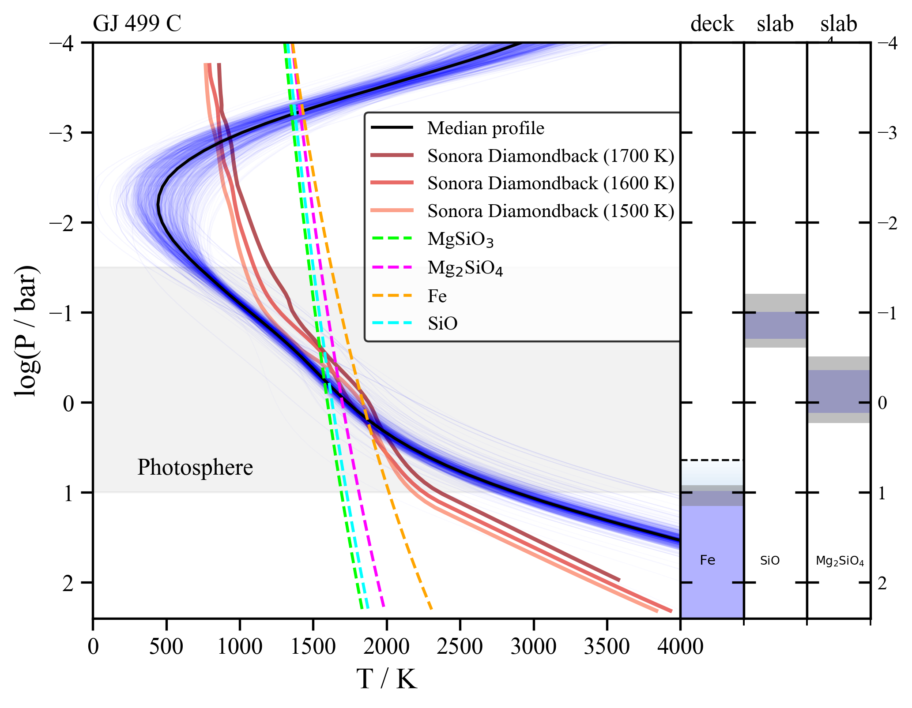
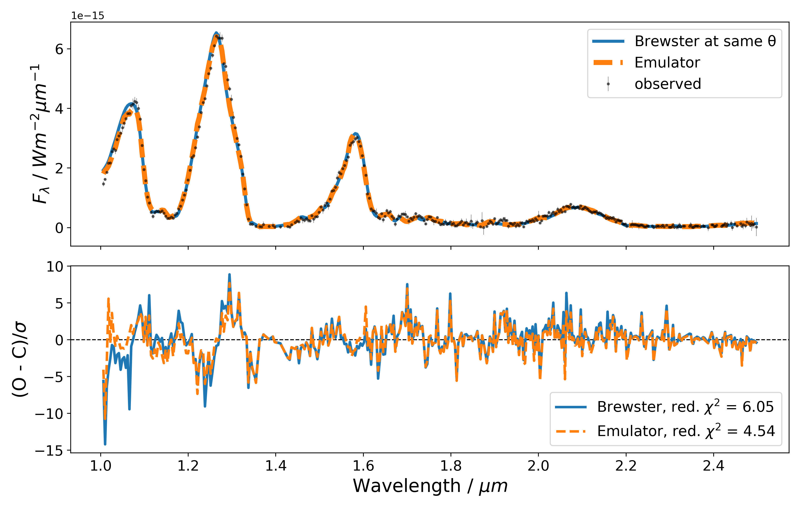
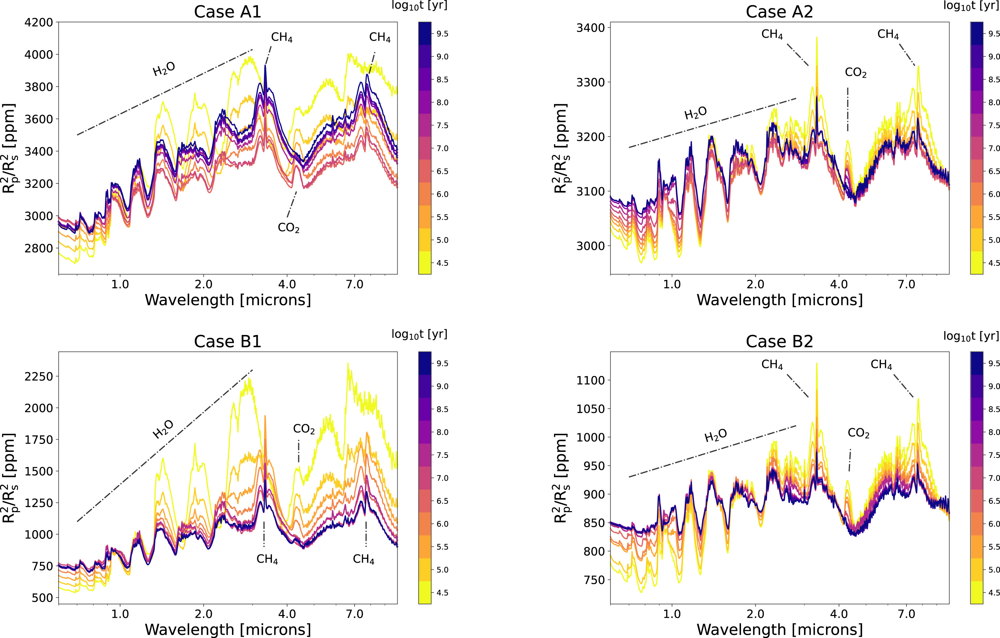
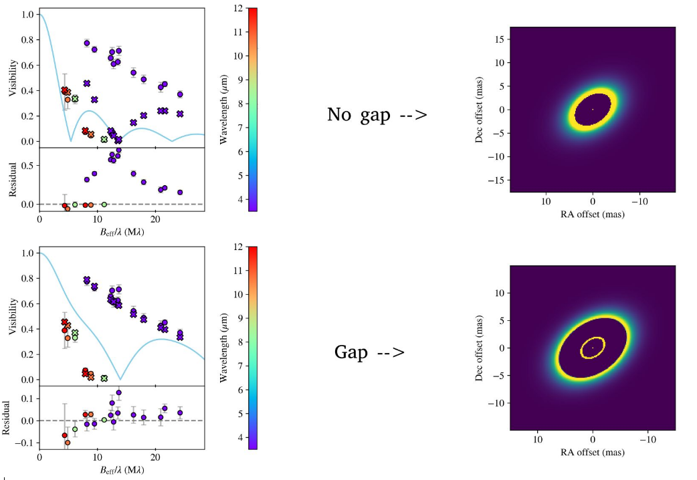
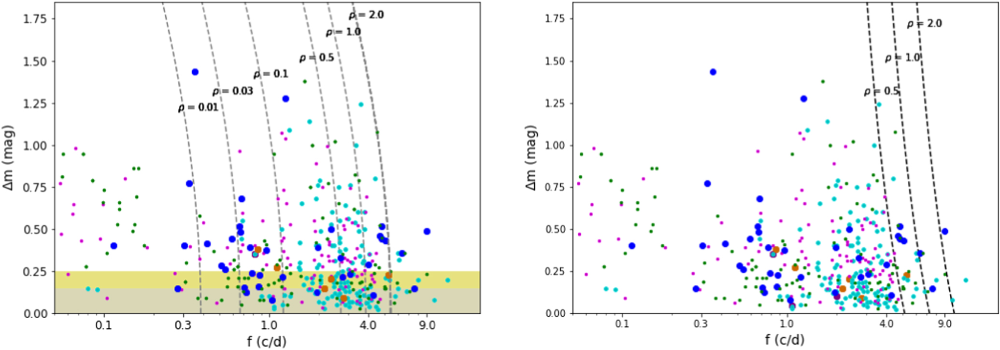
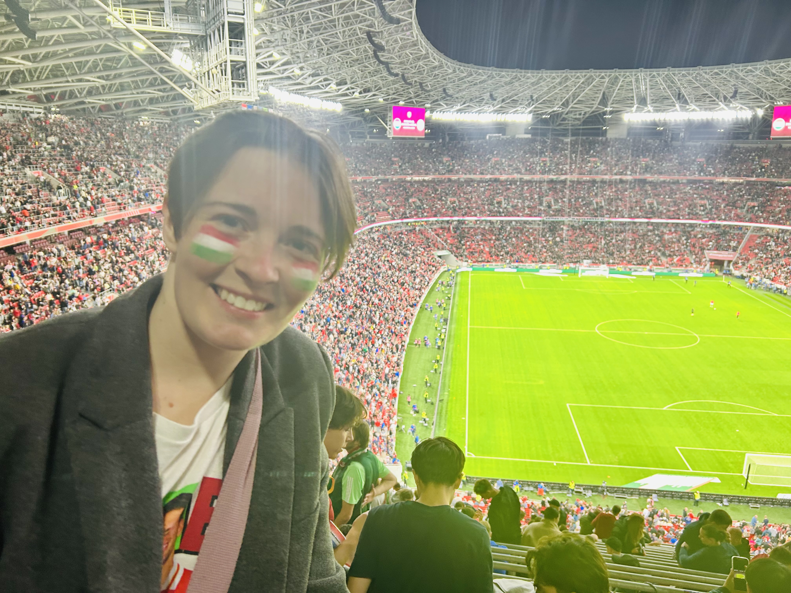
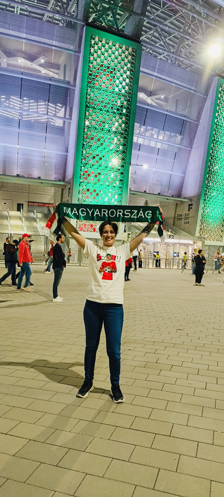

Brown dwarf atmospheric retrievals
I analyse low-resolution JWST NIRSpec and MIRI spectra of benchmark L-T dwarfs using the Brewster atmospheric retrieval framework to learn more about their composition, clouds, and thermal structure. These objects are companions to well-characterised stars, which allows their atmospheric properties to be compared with independent constraints on age and bulk composition.

Accelerating Atmospheric Retrievals with Neural Emulators
My goal is to replace the computationally expensive forward model in Brewster with a much faster neural emulator that can handle high-dimensional (30-40 parameters) models. The emulator is currently ~ 400 times faster than Brewster's forward model.
Previous Research

Thermal evolution & transmission spectra
I investigated how thermal evolution and stellar irradiation affect the atmospheric chemistry and transmission spectra of hydrogen-dominated gaseous planets.

Substructure of disks with VLTI
I modelled the inner structure of planet-forming disks observed with VLTI-MATISSE, searching for gaps that may reveal nascent planets.

K2 light curves of trans-Neptunian objects
I studied the rotational properties, shapes and possible binarity of Hilda asteroids and trans-Neptunian objects using long, uninterrupted K2 light curves.
Publications
Full list of publication: NASA/ADS ↗
Updated 4 October 2026
More About Me
I am a massive football fan and always support my home country's national team! The pictures below were taken before one of their UEFA Nations League matches. My favourite clubs are Liverpool FC and Ferencvárosi TC. I also enjoy playing the ukulele and the piano in my spare time.

